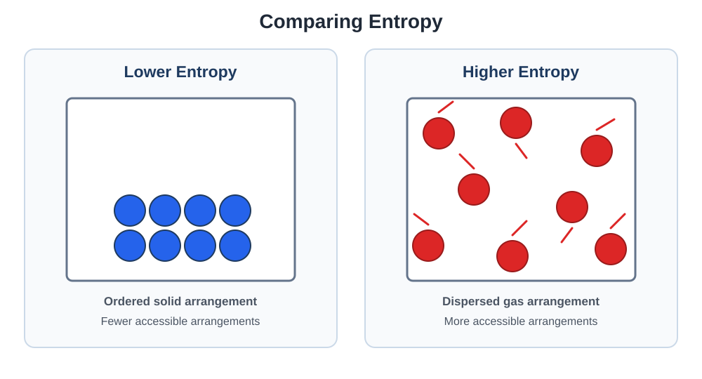

Applications of Thermodynamics
Examine entropy, spontaneity, Gibbs free energy, equilibrium, electrochemical cells, cell potential, and electrolysis.
Topics
Entropy and Spontaneity
Analyze entropy changes and determine how energy dispersal and particle arrangement influence whether a process is thermodynamically favored.
Gibbs Free Energy and Equilibrium
Use enthalpy, entropy, temperature, and equilibrium constants to determine whether reactions are thermodynamically favorable.
Electrochemistry
Explore galvanic and electrolytic cells, oxidation and reduction, cell potential, free energy, and quantitative electrolysis.
Entropy and Spontaneity
Entropy, represented by S, describes the dispersal of energy and the number of possible microscopic arrangements available to a system.
Entropy is sometimes described as disorder, but a more precise interpretation focuses on how many possible arrangements, or microstates, can produce the same observable state.
Microstates
A microstate is one possible arrangement of the particles and energy in a system. A system with more possible microstates has greater entropy.
In this relationship:
- S is entropy.
- kB is the Boltzmann constant.
- W is the number of possible microstates.

Factors That Affect Entropy
| Change | General Effect on Entropy |
|---|---|
| Solid → Liquid → Gas | Entropy increases |
| Increasing temperature | Entropy increases |
| Increasing the number of gas particles | Entropy usually increases |
| Increasing particle complexity | Entropy generally increases |
| Mixing particles | Entropy generally increases |
| Expanding a gas into a larger volume | Entropy increases |
Sgas > Sliquid > Ssolid
Predicting the Sign of ΔS
The entropy change of a reaction can often be predicted by comparing the physical states and numbers of particles on the reactant and product sides.
Example: Decreasing Entropy
The reactants contain four total moles of gas, while the products contain two moles of gas.
Because the number of gas particles decreases, ΔS is negative.
Example: Increasing Entropy
The reactant side contains only a solid, while the product side includes a gas.
The formation of gas greatly increases the number of accessible arrangements, so ΔS is positive.
Standard Molar Entropy
Standard molar entropy, S°, is the entropy of one mole of a substance under standard-state conditions. Its common units are:
Unlike standard enthalpies of formation, the standard molar entropy of an element in its standard state is not generally zero.
Each standard molar entropy must be multiplied by its coefficient in the balanced equation.
Example: Calculating Standard Entropy Change
Use these standard molar entropies:
| Substance | S° in J/(mol·K) |
|---|---|
| H2(g) | 130.7 |
| O2(g) | 205.0 |
| H2O(l) | 69.9 |
The result is negative, which is consistent with gaseous reactants forming a liquid product.
Entropy Changes During Phase Transitions
At the temperature where two phases are in equilibrium, the entropy change for a phase transition can be calculated from its enthalpy change.
Entropy of the Universe
The second law of thermodynamics describes thermodynamic favorability using the entropy change of the universe.
| Value | Meaning |
|---|---|
| ΔSuniverse > 0 | Process is thermodynamically favored |
| ΔSuniverse = 0 | System is at equilibrium |
| ΔSuniverse < 0 | Forward process is not thermodynamically favored |
Entropy Change of the Surroundings
At constant temperature and pressure, the surroundings’ entropy change is related to the system’s enthalpy change.
An exothermic process releases energy into the surroundings, increasing the surroundings’ entropy. An endothermic process removes energy from the surroundings, decreasing their entropy.
Thermodynamic Favorability Versus Reaction Rate
Thermodynamic favorability describes whether a process has a tendency to occur under the stated conditions. It does not determine how quickly the process occurs.
Kinetics determines how quickly the process occurs.
A thermodynamically favored reaction can still occur extremely slowly if it has a large activation-energy barrier.
Gibbs Free Energy and Equilibrium
This lesson will connect enthalpy, entropy, temperature, spontaneity, equilibrium constants, and coupled reactions.
Electrochemistry
This lesson will examine galvanic and electrolytic cells, standard cell potential, the relationship between electrical work and free energy, and electrolysis calculations.